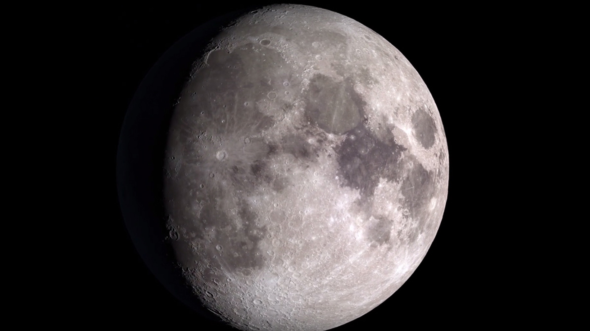
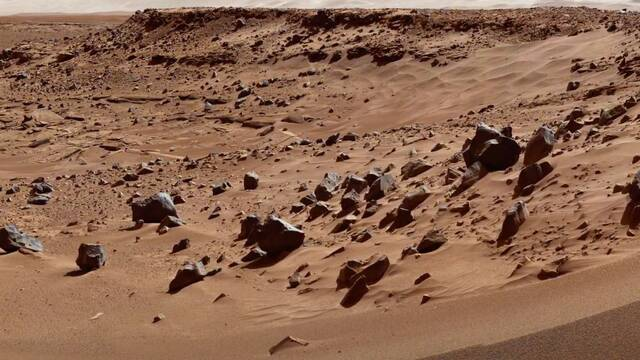

El espacio exterior continúa siendo uno de los entornos más hostiles para el ser humano. Las extremas variaciones de temperatura, la radiación cósmica, la microgravedad y las enormes distancias representan desafíos constantes para las misiones actuales y futuras. Estas condiciones obligan a desarrollar tecnologías que garanticen la seguridad de los astronautas y el correcto funcionamiento de los equipos durante largos periodos.
A estas dificultades físicas se suman los costos extremadamente elevados de poner cargas en órbita o enviar misiones a otros planetas. La necesidad de desarrollar tecnologías más eficientes y seguras,como sistemas de propulsión avanzada o vehículos reutilizables, es uno de los principales retos para reducir gastos y hacer la exploración espacial más accesible.
Por otro lado, también surgen dilemas científicos y éticos. La posibilidad de explotar recursos extraterrestres, como minerales en asteroides o agua en la Luna, abre debates sobre su regulación, propiedad y uso responsable. Además, la búsqueda de vida microbiana en Marte o en lunas como Europa plantea la obligación de garantizar la protección de posibles ecosistemas, evitando la contaminación biológica tanto desde la Tierra hacia otros mundos como en sentido inverso.

